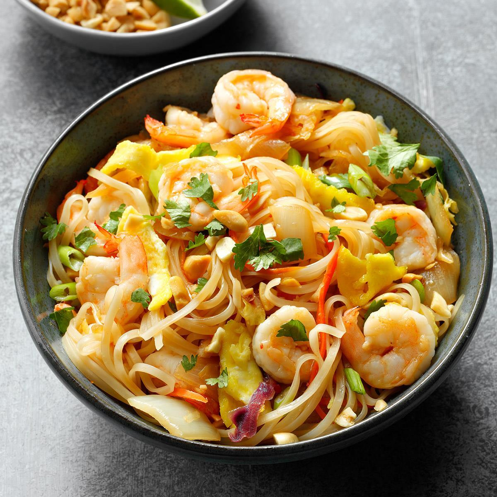

Pad Thai

Description
Who loves seafood, peanuts, and Thai cuisine?
If your answer is yes to all three, then maybe you should try out this delicious recipe!
Ingredients
- 1 (8 ounce) package dried rice noodles
- 2 teaspoons peanut oil
- 1 small onion, diced
- 2 cloves garlic, minced
- 3 tablespoons rice wine vinegar
- 3 tablespoons ketchup
- 3 tablespoons fish sauce
- 3 tablespoons sweet chile sauce
- 2 tablespoons creamy peanut butter
- 1 tablespoon light soy sauce
- 1 tablespoon fresh lime juice
- 1 tablespoon white sugar
- 1 teaspoon red pepper flakes
- ½ teaspoon cayenne pepper
- 12 uncooked medium shrimp, peeled and deveined
- 2 eggs, lightly beaten
- 1 cup unsalted dry-roasted peanuts, chopped
- ½ pound bean sprouts
- ¼ cup shredded carrots (Optional)
- ½ lime, cut into wedges
- ¼ cup chopped green onions
- ¼ cup coarsely chopped cilantro
Steps
- Place noodles in a large bowl and cover with hot water. Set aside until noodles are softened, about 15 minutes. Drain and rinse thoroughly.
- Heat oil in a wok over medium heat. Cook and stir onion and garlic until onion is translucent, about 5 minutes.
- Combine rice wine vinegar, ketchup, fish sauce, chile sauce, peanut butter, soy sauce, lime juice, sugar, red pepper flakes, and cayenne pepper together in a bowl. Set aside.
- Add shrimp to the wok. Cook and stir until pink, about 4 minutes. Add the ketchup mixture and stir. Move all ingredients to one side to clear a small space in the pan. Pour in eggs and cook without stirring until partially set, about 3 minutes.
- Stir the drained noodles into the shrimp and egg mixture. Add 1/2 cup peanuts, 1/4 cup bean sprouts, and carrots. Cook and stir until noodles are heated through, about 2 minutes. Garnish with the remaining peanuts, bean sprouts, lime wedges, green onions, and cilantro.